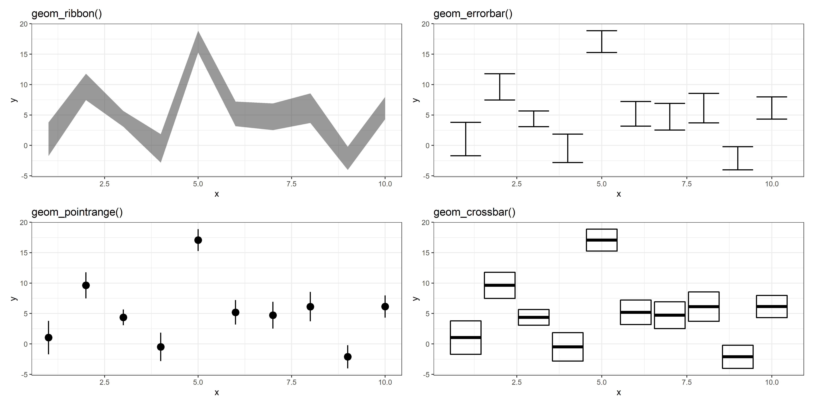

Workshop de importação e transformação de dados (Aula 4)
Hoje…
Quais os geoms do ggplot2
Como modificar escalas
Escalas de cor
Escalas de formas de pontos
Escalas de tipos de linhas
Escalas dos eixos
Como adicionar média, desvios e barras de erro diretamente
Como modificar temas dos gráficos
Extensões do ggplot2
Como salvar os gráficos
geoms
geoms básicos:
geom_point()
geom_line(), geom_path()
geom_col()
geom_text(), geom_label()
geom_area()
geom_rect(), geom_raster(), geom_tile()
geom_polygon()
Todos estes aceitam coordenadas de x e y, aceitam outrs estéticas como color, fill, size e outros.
Eu chamo de geoms básicos porque eles apenas mostram os dados que são apresentados a eles sem fazer nenhum tipo de cálculo ou transformação.
Exemplos de geoms básicos
Exemplos de geoms básicos (2)
geoms coletivos
Os geoms coletivos são elementos gráficos que agrupam os dados de alguma forma ou que aplicam alguma transformação matemática/estatística para exemplificar algum grau de incerteza ou mostrar a ditribuição dos dados.
Nesta categoria temos:
geom_histogram(), geom_freqpoly()
geom_boxplot()
geom_violin()
geom_density(), geom_density_2d()
geom_smooth(),
geom_linerange()
Exemplos de geoms coletivos
Exemplos de geoms coletivos (2)

Outros geoms
Existem outros geoms que podem encontrados na página de referência do ggplot2.
https://ggplot2.tidyverse.org/reference/
Lá você pode achar mais informações que se aplique ao seu uso.
plotando funções
Estéticas
Na primeira aula de ggplot2 eu expliquei que as estéticas do gráfico, (eixo x, eixo y, cor, tipo de linha, tamanho de ponto etc) são mapeadas aos dados que são passados à função ggplot.
É possível customizar a escala do mapeamento através das funções scale_*_*() ou sobrescrever as estéticas manualmente.
As escalas dos eixos podem ser modificadas através das funções scale_<x>_*() onde dentro de < > pode ser o eixo x e eixo y.
Algumas das transformações comuns são: - Aumentar os limites do gráfico - Inverter os valores dos eixos - Mudar para escala logarítmica, inverso, raiz quadrada - Mudar a quantidade de linhas divisoras breaks - Mudar as labels dos breaks
Uma das formas de plotar os resumos estatísticos, como média e desvio padrão entre triplicatas, é calcular estes valores, criar um objeto com eles e plotar no gráfico.
Desvantagens
Aumenta o número de operações
Mais código para escrever
Menos intuitivo para quem está lendo
Dificulta a adição dos dados do resumo sobre os dados brutos no gráfico
Para se adicionar resumos estatísticos (média, desvio padrão etc) existe um tipo específico de geom chamado stat_summary().
Através deste é possível adicionar funções que retornam os valores dos resumos estatísticos sem ter que criar um objeto antes de criar o gráfico
Neste caso foi usado apenas a função média, mas pode ser usada qualquer função escrita que retorne o valor central, mínimos e máximos.
Modificando temas
Temas do ggplot2
Por padrão alguns temas vêm instalados como o theme_bw(), theme_dark(), theme_void() e alguns outros.
Porém é possível modificar os elementos de um tema usando a função theme(). Esta função contém muitos argumentos e não é prático estudá-los nesta aula, contudo é bem documentado na página de temas do ggplot2 https://ggplot2.tidyverse.org/reference/theme.html.
Elementos do tema
Extensões do ggplot2
Extensões
Existem extensões que adicionam outros temas, geoms, stats, tipos de gráficos, escalas de cores, gráficos interativos e muito mais ao ggplot2. Alguns dos principais são:
gganimate:: facilita a criação animações de gráficos e exporta em .gif ou formato de vídeo.
ggforce:: adiciona outros geoms e outros tipos de facet
patchwork:: facilita a combinação de vários gráficos em uma só imagem
ggrepel:: automaticamente posiciona elementos de geom_text() para que não fiquem sobrepostos
gghighlight:: facilita que dados sejam destacados nos gráficos
ggtext:: facilita formatação de textos dos gráficos
ggthemes:: importa vários temas distintos
ggpmisc:: adiciona várias funcionalidades variadas
ggpubr:: importa funções que facilitam a construção de gráficos prontos para publicação
esquisse:: interface gráfica para criação de gráficos
gganimate
library(gapminder)library(gganimate)ggplot(gapminder, aes(gdpPercap, lifeExp, size = pop, colour = country)) +geom_point(alpha =0.7, show.legend =FALSE) +scale_colour_manual(values = country_colors) +scale_size(range =c(2, 12)) +scale_x_log10() +facet_wrap(~continent) +# Here comes the gganimate specific bitslabs(title ='Year: {frame_time}', x ='GDP per capita', y ='life expectancy') +transition_time(year) +ease_aes('linear')
ggforce
ggrepel
ggtext
Como salvar gráficos?
Como salvar gráficos?
Como salvar gráficos?
A forma mais “adequada” de se salvar gráficos é usando a função ggsave().